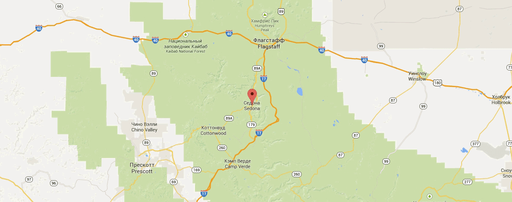

Седона — небольшой городок в Аризоне, заслуживающий большего!
Рассмотрим 5 причин, по которым Седона круче, чем гранд каньон!
НАСТОЯЩИЙ
ГОРОДОК
— №1 —
СЕДОНА — НЕ АТТРАКЦИОН ДЛЯ ТУРИСТОВ, ТАМ ТЕЧЁТ СВОЯ ЖИЗНЬ

-
ЖИЛЬЁ
РЕКОМЕНДУЕМ ПОЖИТЬ В НАСТОЯЩЕМ МОТЕЛЕ, ВСЁ КАК В КИНО!
-
ЕДА
ВСЕГДА ЗАКАЗЫВАЙТЕ ФИРМЕННЫЙ БУРГЕР, ВЫ НЕ РАЗОЧАРУЕТЕСЬ!
-
СУВЕНИРЫ
НЕ ТОЛЬКО КИТАЙСКОГО, НО И МЕСТНОГО ПРОИЗВОДСТВА!

ТАМ ЕСТЬ
МОСТ ДЬЯВОЛА
— №2 —
ДА, ПО НЕМУ МОЖНО ПРОЙТИ! ЕСЛИ КОНЕЧНО ВЫ ОСМЕЛИТЕСЬ
-
НЕБОЛЬШАЯ
ПЛОЩАДЬ— №3 —
ВСЕ ДОСТОПРИМЕЧАТЕЛЬНОСТИ НАХОДЯТСЯ ОЧЕНЬ БЛИЗКО
-
КРАСИВАЯ
ДОРОГА— №4 —
ЕХАТЬ В СЕДОНУ ИЗ ЛАС-ВЕГАСА СОВСЕМ НЕ СКУЧНО!
-
МАЛО
ТУРИСТОВ— №5 —
БОЛЬШИНСТВО ЕДЕТ В ГРАНД КАНЬОН И ТОЛПИТСЯ ТАМ
ЗАИНТЕРЕСОВАЛИСЬ?
Укажите предполагаемые даты поездки, и мы покажем вам лучшие предложения гостиниц в седоне
